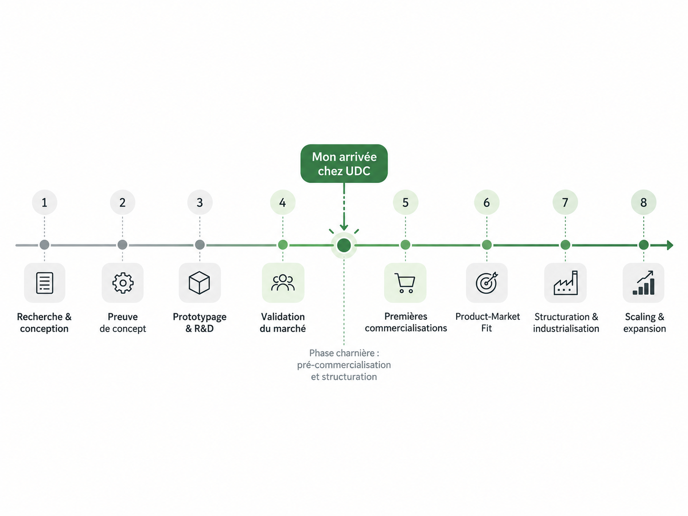
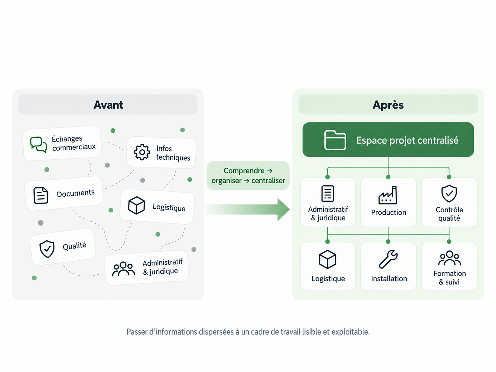
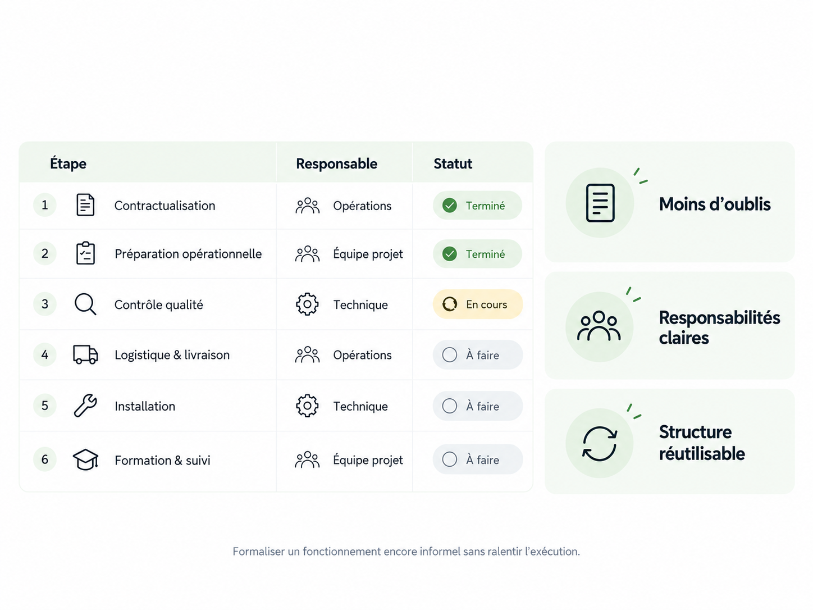

Structurer tout en exécutant.
Transformer un fonctionnement encore peu formalisé en un cadre opérationnel plus clair, standardisé et réutilisable, sans ralentir l’exécution quotidienne.
Projet mené au sein d’une startup française spécialisée dans les technologies immersives et la téléopération, alors en phase pré-commerciale et de structuration opérationnelle. Dans ce contexte, j’ai participé à la formalisation des processus, à la coordination transverse des activités et à la mise en place d’une gouvernance documentaire capable d’accompagner progressivement la montée en charge.
Rejoindre l’entreprise avant la montée en charge.
J’ai rejoint UDC au moment où les premiers cas d’usage et les opportunités commerciales commençaient à se transformer en projets concrets à exécuter. L’enjeu devenait alors de structurer progressivement l’organisation en parallèle du développement de l’activité.

Positionnement de mon arrivée dans le parcours de maturité de l’entreprise.
Organiser ce qui reposait encore sur plusieurs sources.
L’exécution d’un projet mobilisait plusieurs dimensions à la fois : commercial, administratif et juridique, production, contrôle qualité, logistique, installation et formation client. Les informations utiles étaient donc réparties entre plusieurs interlocuteurs, documents et échanges.
Mon travail a d’abord consisté à comprendre ces dépendances et à assurer une coordination transverse entre les différentes étapes, afin de pouvoir les rendre progressivement plus lisibles et plus structurées.

Construire une base commune pour l’exécution.
J’ai progressivement regroupé les informations et documents utiles dans une structure centralisée. Cette gouvernance documentaire permettait de retrouver plus facilement les éléments nécessaires, de clarifier le parcours du projet et de limiter la dépendance aux échanges informels ou à la mémoire individuelle.
Transformer l’expérience terrain en structure réutilisable.
Une fois le fonctionnement compris, j’ai participé à sa standardisation : étapes identifiées, responsabilités clarifiées et suivi commun des tâches. L’objectif était de disposer d’une structure suffisamment stable pour être réutilisée, tout en restant adaptable aux spécificités de chaque nouveau projet.
Cette standardisation réduit les oublis, facilite la transmission entre les équipes et contribue à la scalabilité opérationnelle de l’activité.

Exemple fictif illustrant la logique de standardisation utilisée.
Moins d’oublis
Les étapes importantes deviennent visibles et ne reposent plus uniquement sur la mémoire individuelle.
Responsabilités plus claires
Chaque phase peut être associée à une fonction ou une équipe identifiée.
Structure réutilisable
La base peut être dupliquée puis adaptée aux contraintes de chaque nouveau projet.
Apporter de la structure sans ralentir le terrain.
Ce projet illustre ma capacité à évoluer dans un environnement où tout n’est pas encore défini : comprendre rapidement le fonctionnement existant, absorber des informations provenant de plusieurs métiers, coordonner l’exécution puis transformer progressivement les pratiques terrain en processus plus clairs et standardisés.
Du cadre opérationnel à l’exécution terrain.
J’ai ensuite appliqué ce même raisonnement — comprendre, organiser, exécuter puis standardiser — dans un contexte opérationnel plus complexe, lors de ma participation au Mondial de l’Auto 2026 dans le cadre du partenariat entre UDC et Honda.
Découvrir le projet Honda →